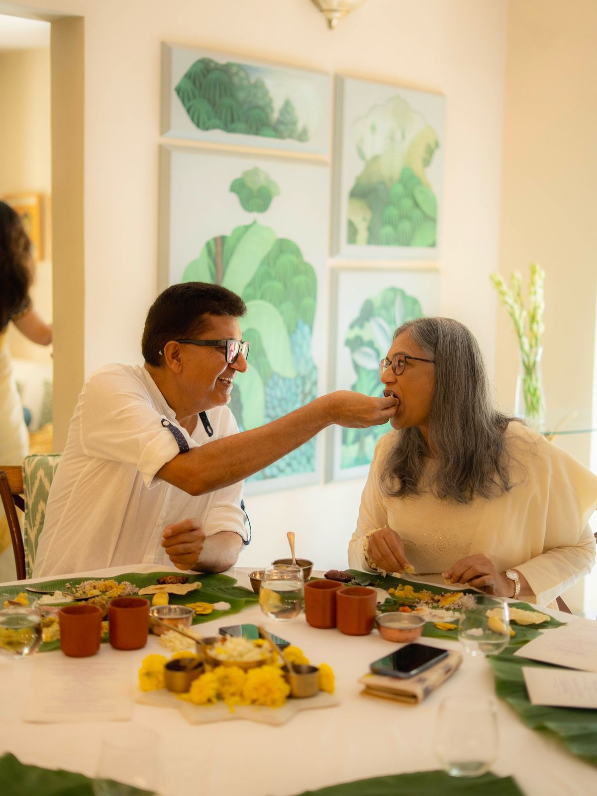
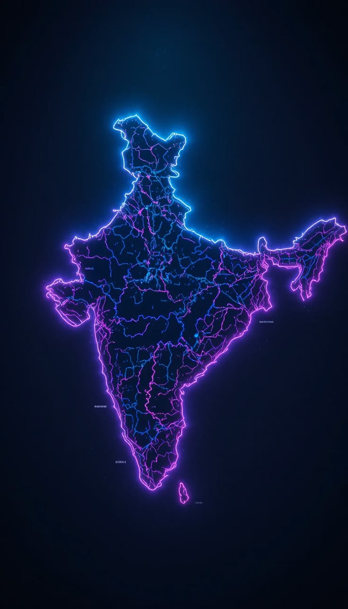

A father needs care arranged before the ceremony date.
Humanitarian dialysis travel assistance across India
Travel Should Not Stop Because Dialysis Cannot.
Helping kidney failure patients find dialysis centres across India before they travel.
Verified centres
Patient support
India network
Next destination
Dialysis planned before travel
Search city, check centre details, request support.
Why journeys pause
Dialysis dependency often limits more than movement. It limits confidence, social life, family participation and emotional well-being. dialysis on go has been created to help patients travel, connect and live with dignity by making dialysis access easier across India.
A grandmother wants dignity, not uncertainty, on the road.
Treatment planning cannot wait for office hours.
Care access should not decide whether a reunion happens.
Restore movement
Some journeys are too important to miss.
A family meal, a celebration, a pilgrimage, or a visit to loved ones should not feel impossible because dialysis has to be planned in another city.
dialysis on go helps patients and caregivers search early, understand centre options, and request support before travel begins.

Search across India
Find Dialysis Centres Across India
Search by city, location or travel destination and access important dialysis centre information before you travel.
India Map

Planning travel for a patient? Search early and request support before finalising your journey.
How it works
How Dialysis On Go Helps Patients Travel Better
- 01Search destination
Enter the city, temple town, business hub, or family address.
- 02Explore centres
See nearby dialysis options with practical planning details.
- 03Check verified listings
Prioritize trustworthy centres before travel begins.
- 04Request support
Let the team help when searching feels difficult.
- 05Travel confidently
Move again with treatment planned around the journey.
Patient support
When Searching Feels Difficult, Our Support Team Can Help.
Patients and caregivers may not always be able to call multiple centres, check details, understand availability or coordinate slots while planning travel. Our role is to guide, assist and connect.
- Find dialysis centres in your destination city
- Understand centre details and available facilities
- Assist with slot coordination
- Guide caregivers through the process
For families
Built for Patients. Equally Built for Families.
In many dialysis journeys, the caregiver carries the invisible burden: searching for centres, making calls, checking reports, confirming slots, managing travel and protecting the patient from stress.
Find the right centre in your destination before you go.
→Know what services and support are available.
→Our team can help coordinate with centres on your behalf.
→Plan early and travel with confidence and peace.
→Align treatment schedules with your travel plans.
→Stay updated and consult your doctor with clarity.
→What Our Patients Say
“My father had to travel for my sister's wedding. We found a dialysis option before leaving Delhi, and that one confirmation changed the whole mood at home.”
“The city search made planning less frightening. I could see options near our stay and speak to support before booking tickets.”
“For pilgrimage travel, dialysis planning is usually the hardest part. This helped us ask the right questions early.”
115+listed centre locations
10Indian cities
24hearly planning mindset